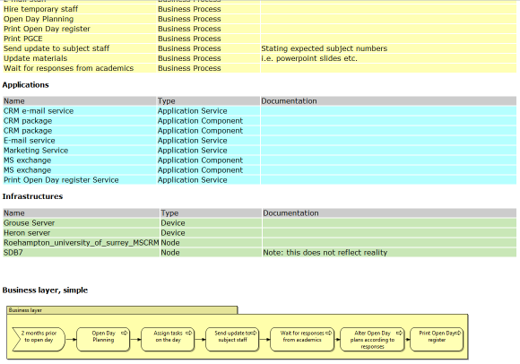

Archi supports basic reporting functionality by means of generating a single HTML page containing summary tables of the model elements and the Views in a model.
This option is available from the "Report->HTML..." menu item from the main "File" menu. Once a model is selected in the Model Tree or in a View this menu item is enabled. Select a folder to export the model and its Views.
A single HTML page, "report.html" is generated in the chosen output folder together with image files for the Views in the model.

Part of a Generated Report